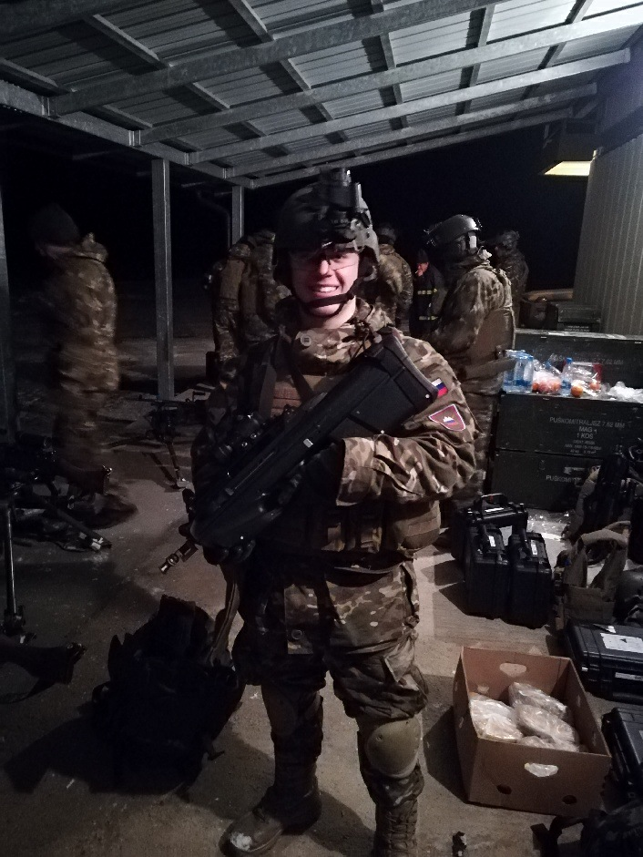

Jan Debeljak

Summary
I am a hardworking and dedicated individual, interested in web development and programming,
currently working as an Infantry Team Leader in the Slovenian Armed Forces,under 1st Brigade, 10th Infantry Regiment, 3rd Company, 2nd Platoon.
Education
- Srednja Medijska in Grafična šola, Ljubljana (2012-2016)
Work Experience
Slovenian Armed Forces
December 2016 - May 2023
- Completed 6 months of Military Recruit training,
- Heavy Weapons course
- Vehicle Gunner course
- Infantry Leadership Course & Basic Leader Course
- Combat Life Saver Course
- Designated Marksman in an infantry squad
Skills
- Communication skills ⭐️⭐️⭐️⭐️⭐️
- Leadership skills ⭐️⭐️⭐️⭐️
- Management skills ⭐️⭐️⭐️⭐️
Awards and Certifications
- Several SVN accolades for service
- Non-Article 5 NATO Medal for service with NATO in relation with Balkan Operations (2018)
- Force Command SAF Medal for administering first aid to a civilian in relation to border patrol
Other